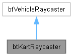

btKartRaycaster 클래스 참조
btKartRaycaster에 대한 상속 다이어그램 :

Public 멤버 함수 | |
| btKartRaycaster (btDynamicsWorld *world, bool smooth_normals=false) | |
| virtual void * | castRay (const btVector3 &from, const btVector3 &to, btVehicleRaycasterResult &result) |
Private 속성 | |
| btDynamicsWorld * | m_dynamicsWorld |
| bool | m_smooth_normals |
| True if the normals should be smoothed. | |
멤버 함수 문서화
◆ castRay()
|
virtual |
Constructor, initialises the triangle index.
Stores the index of the triangle hit.
Returns the index of the triangle which was hit, or -1 if no triangle was hit.
멤버 데이터 문서화
◆ m_smooth_normals
|
private |
True if the normals should be smoothed.
Not all tracks support this, so this flag is set depending on track when constructing this object.
이 클래스에 대한 문서화 페이지는 다음의 파일들로부터 생성되었습니다.:
- physics/btKartRaycast.hpp
- physics/btKartRaycast.cpp
생성시간 : , 프로젝트명 : SuperTuxKart, 생성자 :